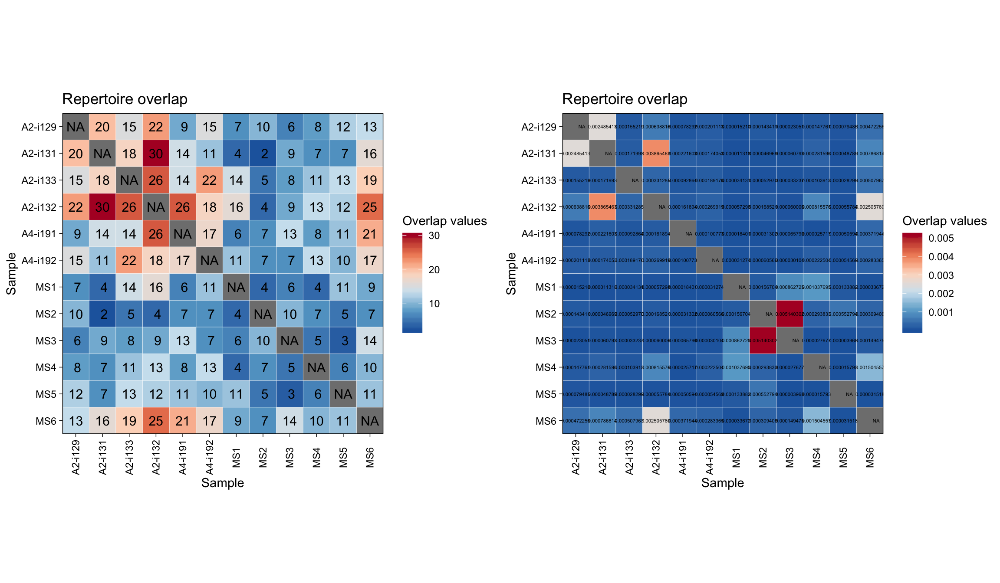
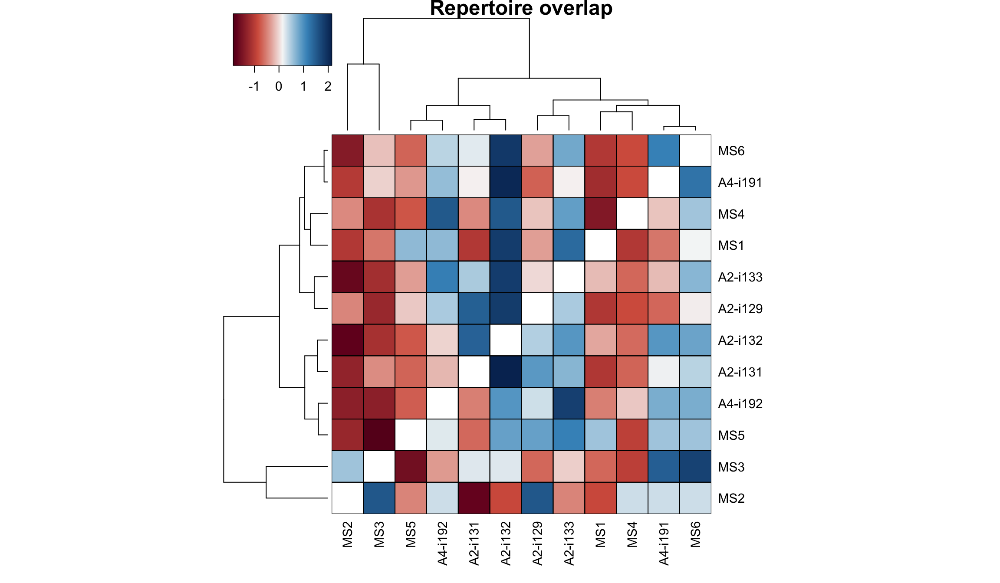
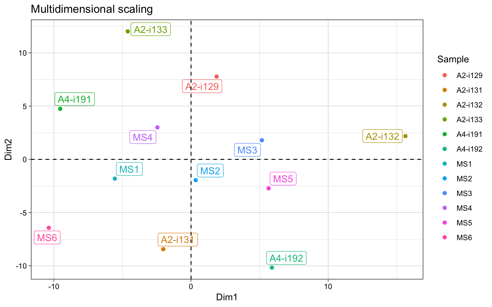
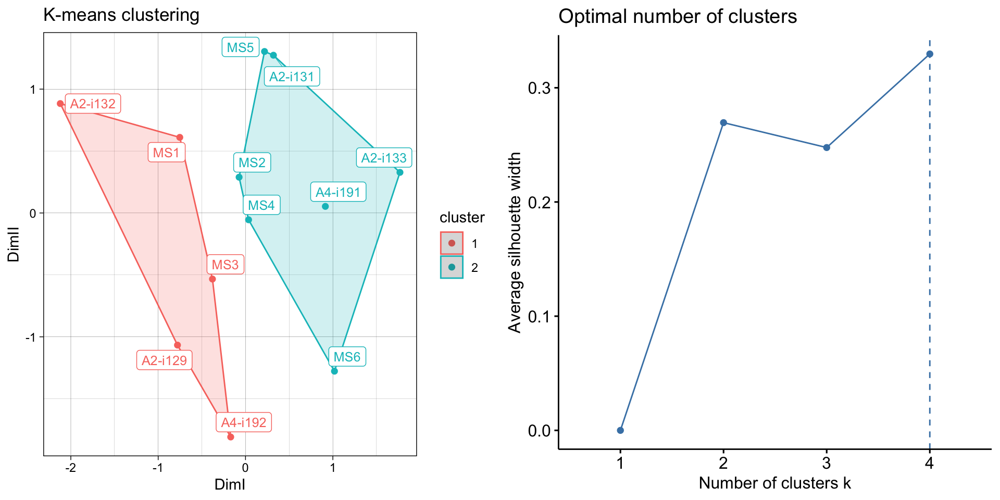

Repertoire overlap
Repertoire overlap is the most common approach to measure repertoire similarity. It is achieved by computation of specific statistics on clonotypes shared between given repertoires, also called “public” clonotypes. immunarch provides several indices: - number of public clonotypes (.method = "public") - a classic measure of overlap similarity.
overlap coefficient (
.method = "overlap") - a normalised measure of overlap similarity. It is defined as the size of the intersection divided by the smaller of the size of the two sets.Jaccard index (
.method = "jaccard") - it measures similarity between finite sample sets, and is defined as the size of the intersection divided by the size of the union of the sample sets.Tversky index (
.method = "tversky") - an asymmetric similarity measure on sets that compares a variant to a prototype. If using default arguments, it’s similar to Dice’s coefficient.cosine similarity (
.method = "cosine") - a measure of similarity between two non-zero vectorsMorisita’s overlap index (
.method = "morisita") - a statistical measure of dispersion of individuals in a population. It is used to compare overlap among samples.top-overlap - overlaps of the N most abundant clonotypes with sequentially growing N (
.method = "top+METHOD")
The function that includes described methods is repOverlap. Again the output is easily visualised when passed to vis() function that does all the work:
imm_ov1 = repOverlap(immdata$data, .method = "public", .verbose = F)
imm_ov2 = repOverlap(immdata$data, .method = "morisita", .verbose = F)
grid.arrange(vis(imm_ov1), vis(imm_ov2, .text.size=1.5), ncol = 2)
vis(imm_ov1, "heatmap2")
To analyse the computed overlap measures function apply repOverlapAnalysis.
# Apply different analysis algorithms to the matrix of public clonotypes:
# "mds" - Multi-dimensional Scaling
repOverlapAnalysis(imm_ov1, "mds")## Standard deviations:
## [1] 0 0 0 0
##
## Rotation:
## [,1] [,2]
## A2-i129 1.8651791 7.771695
## A2-i131 -2.0246183 -8.435687
## A2-i133 -4.6152434 12.017445
## A2-i132 15.6362099 2.186638
## A4-i191 -9.5429713 4.745392
## A4-i192 5.8953987 -10.163369
## MS1 -5.5601454 -1.810935
## MS2 0.3411929 -1.954662
## MS3 5.1691898 1.792923
## MS4 -2.4522675 3.000137
## MS5 5.6609794 -2.721500
## MS6 -10.3729039 -6.428076# "tsne" - t-Stochastic Neighbor Embedding
repOverlapAnalysis(imm_ov1, "tsne")## DimI DimII
## A2-i129 44.52741936 107.89380
## A2-i131 -0.01203784 -43.56757
## A2-i133 16.11936882 -15.31748
## A2-i132 20.56026375 -69.81114
## A4-i191 -70.40314643 -36.32286
## A4-i192 21.85831350 56.46504
## MS1 -58.83288112 -53.90767
## MS2 14.29439695 -41.33225
## MS3 23.78253956 101.73544
## MS4 -60.82217424 -71.23519
## MS5 10.53004891 106.01326
## MS6 38.39788876 -40.61336
## attr(,"class")
## [1] "matrix" "immunr_tsne"# Visualise the results
vis(repOverlapAnalysis(imm_ov1, "mds"))
# Apply different analysis algorithms to the matrix of public clonotypes:
# "mds" - Multi-dimensional Scaling
repOverlapAnalysis(imm_ov1, "mds")## Standard deviations:
## [1] 0 0 0 0
##
## Rotation:
## [,1] [,2]
## A2-i129 1.8651791 7.771695
## A2-i131 -2.0246183 -8.435687
## A2-i133 -4.6152434 12.017445
## A2-i132 15.6362099 2.186638
## A4-i191 -9.5429713 4.745392
## A4-i192 5.8953987 -10.163369
## MS1 -5.5601454 -1.810935
## MS2 0.3411929 -1.954662
## MS3 5.1691898 1.792923
## MS4 -2.4522675 3.000137
## MS5 5.6609794 -2.721500
## MS6 -10.3729039 -6.428076# "tsne" - t-Stochastic Neighbor Embedding
repOverlapAnalysis(imm_ov1, "tsne")## DimI DimII
## A2-i129 -220.91065 -90.53168
## A2-i131 80.06455 -80.74273
## A2-i133 42.87002 30.27545
## A2-i132 35.42945 -33.78564
## A4-i191 115.05325 133.46523
## A4-i192 -112.36657 -39.91310
## MS1 135.68849 93.47148
## MS2 65.99152 -16.41437
## MS3 -207.97902 -48.18723
## MS4 169.53829 87.66579
## MS5 -216.78872 -20.46095
## MS6 113.40939 -14.84226
## attr(,"class")
## [1] "matrix" "immunr_tsne"# Visualise the results
vis(repOverlapAnalysis(imm_ov1, "mds"))
# Clusterise the MDS resulting components using K-means
vis(repOverlapAnalysis(imm_ov1, "mds+kmeans"))
Public repertoire
In order to build a massive table with all clonotypes from the list of repertoires use the pubRep function.
# Pass "nt" as the second parameter to build the public repertoire table using CDR3 nucleotide sequences
pr.nt = pubRep(immdata$data, "nt", .verbose = F)
pr.nt## Source: local data table [88,528 x 14]
##
## # A tibble: 88,528 x 14
## CDR3.nt Samples `A2-i129` `A2-i131` `A2-i133` `A2-i132` `A4-i191`
## <chr> <dbl> <dbl> <dbl> <dbl> <dbl> <dbl>
## 1 TGCGCC… 8 2 NA 2 1 NA
## 2 TGTGCC… 7 NA 1 1 2 1
## 3 TGTGCC… 7 1 1 1 NA 1
## 4 TGCGCC… 6 2 NA 1 1 NA
## 5 TGTGCC… 6 5 3 NA 2 3
## 6 TGTGCC… 6 NA 1 1 5 1
## 7 TGTGCC… 6 NA NA NA 1 1
## 8 TGTGCC… 6 1 1 2 NA 5
## 9 TGCAGT… 5 1 3 NA 2 NA
## 10 TGCGCC… 5 1 NA NA NA NA
## # … with 88,518 more rows, and 7 more variables: `A4-i192` <dbl>,
## # MS1 <dbl>, MS2 <dbl>, MS3 <dbl>, MS4 <dbl>, MS5 <dbl>, MS6 <dbl># Pass "aa+v" as the second parameter to build the public repertoire table using CDR3 aminoacid sequences and V alleles
# In order to use only CDR3 aminoacid sequences, just pass "aa"
pr.aav = pubRep(immdata$data, "aa+v", .verbose = F)
pr.aav## Source: local data table [87,730 x 15]
##
## # A tibble: 87,730 x 15
## CDR3.aa V.name Samples `A2-i129` `A2-i131` `A2-i133` `A2-i132` `A4-i191`
## <chr> <chr> <dbl> <dbl> <dbl> <dbl> <dbl> <dbl>
## 1 CASSLE… TRBV5… 8 2 NA 3 1 NA
## 2 CASSDS… TRBV6… 6 1 1 2 NA 5
## 3 CASSDS… TRBV6… 6 NA NA NA 4 1
## 4 CASSFQ… TRBV5… 6 3 NA 1 1 NA
## 5 CASSLG… TRBV1… 6 2 NA NA 4 3
## 6 CASSLQ… TRBV1… 6 NA 1 1 4 NA
## 7 CAS~FF TRBV1… 6 NA 2 1 2 NA
## 8 CSARLA… TRBV2… 6 1 3 NA 2 1
## 9 CASSDS… TRBV6… 5 NA NA NA 3 NA
## 10 CASSFG… TRBV1… 5 NA 1 NA 5 NA
## # … with 87,720 more rows, and 7 more variables: `A4-i192` <dbl>,
## # MS1 <dbl>, MS2 <dbl>, MS3 <dbl>, MS4 <dbl>, MS5 <dbl>, MS6 <dbl># You can also pass the ".coding" parameter to filter out all noncoding sequences first:
pr.aav.cod = pubRep(immdata$data, "aa+v", .coding=T)# Create a public repertoire with coding-only sequences using both CDR3 amino acid sequences and V genes
pr = pubRep(immdata$data, "aa+v", .coding = T, .verbose = F)
# Apply the filter subroutine to leave clonotypes presented only in healthy individuals
pr1 = pubRepFilter(pr, immdata$meta, c(Status = "C"))
# Apply the filter subroutine to leave clonotypes presented only in diseased individuals
pr2 = pubRepFilter(pr, immdata$meta, c(Status = "MS"))
# Divide one by another
pr3 = pubRepApply(pr1, pr2)
# Plot it
p = ggplot() + geom_jitter(aes(x = "Treatment", y = Result), data=pr3)
p